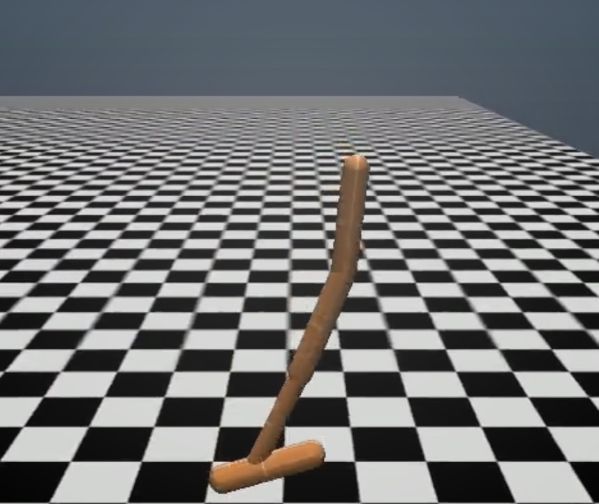

NASA Ames Research Center (January 2017 - Present)
SHERPA: Decision Making Under Uncertainty for the Resource Prospector Mission Research conducted with Edward Balaban
Developed a decision-support system for the lunar rover aboard the Resource Prospector Mission
Stanford University
Autonomous Systems Laboratory (June 2017 - TBD)
TBD
Independent Research (September 2016 - March 2017)

Coordinated Multi-Agent Control Utlizing Deep Reinforcement Learning Research conducted with Kevin Frans and advised by Professor Mykel Kochenderfer at Stanford University
We devised a novel deep reinforcement learning algorithm based off of the policy gradient method that tackles multi agent control.